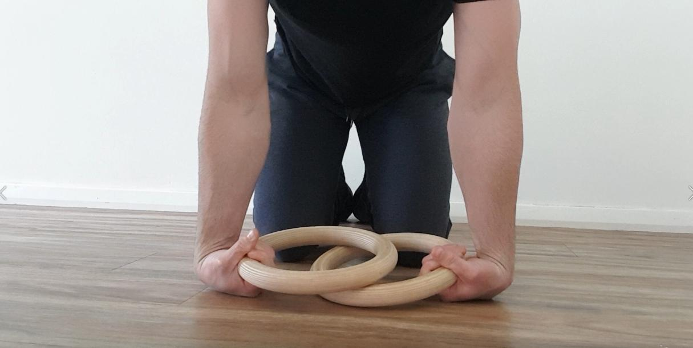
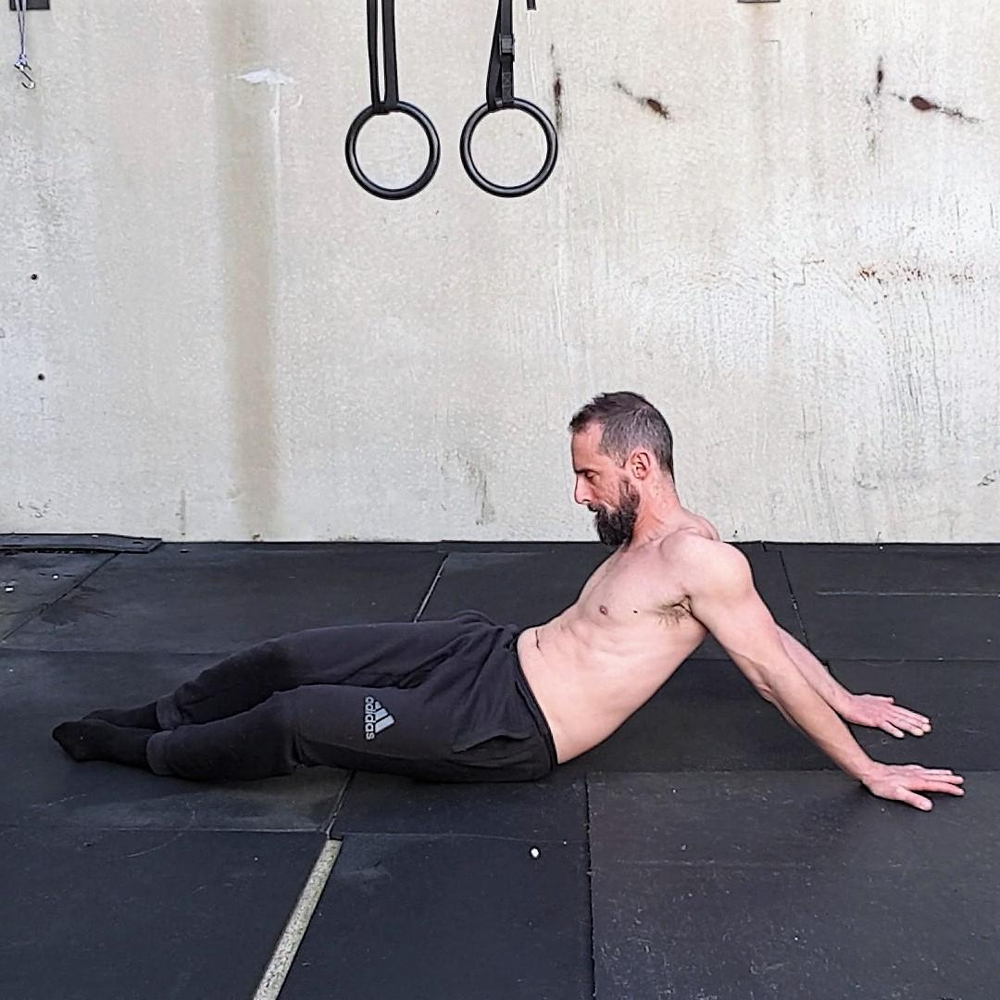
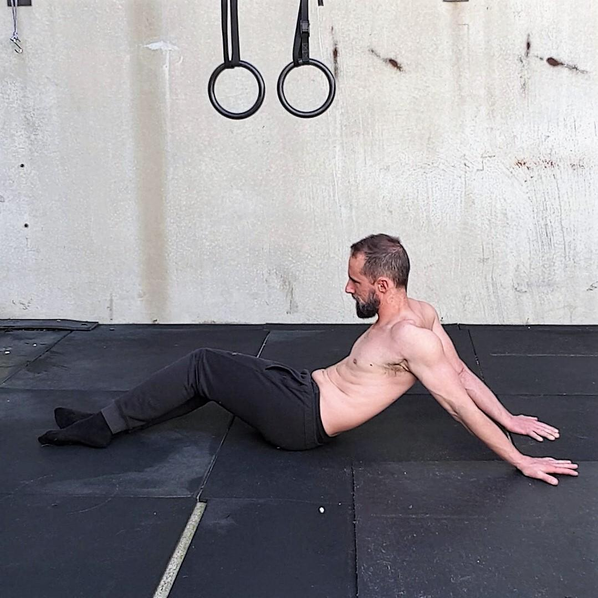
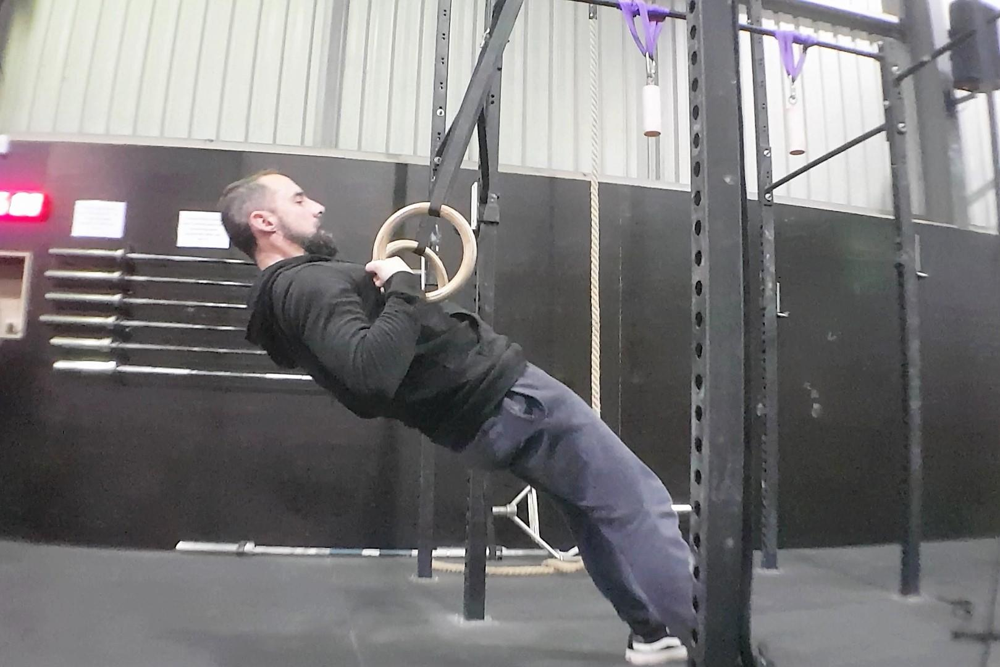
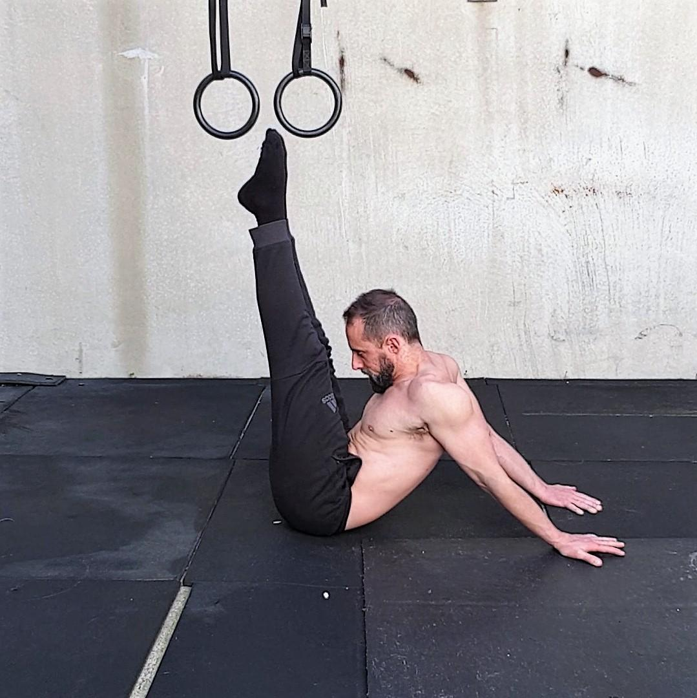

THE
RING MUSCLE UP
The Complete Training Guide
From Your First Ring Hang to a Clean, Strict Muscle Up
The Bodyweight Gym
THE RING MUSCLE UP
The Complete Training Guide
From Your First Ring Hang to a Clean, Strict Muscle Up
The Bodyweight Gym
First Edition
Disclaimer
Before starting any exercise programme, consult a qualified fitness or sports professional to ensure this programme is suitable for you. Do not undertake training with The Bodyweight Gym without professional or qualified instruction on proper technique. Use common sense when training and understand your personal limitations.
Any programme involving resistance training, gymnastics, or work on rings or bars is potentially dangerous and could lead to severe injury. The user assumes all risks and responsibilities for injuries which may occur during or following use of this programme. The Bodyweight Gym cannot be held responsible for any injuries which may occur as a result of training with this programme.
The Bodyweight Gym and the buyer disclaim any express or implied warranty, including, but not limited to, warranties of merchantability or fitness for a particular purpose. The buyer assumes all liability in use of this programme.
© The Bodyweight Gym. All rights reserved.
No part of this publication may be reproduced without written permission.
Contents
Introduction
Benchmarking
Loading, Deloading, and How to Progress
The Workouts
Level 1 — Foundation
Level 2 — Pull & Push
Level 3 — False Grip Integration
Level 4 — Eccentric Control
Level 5 — First Muscle Up
Level 6 — Conditioning
Introduction
The ring muscle up is the movement of pulling yourself from a dead hang on gymnastic rings through the transition and pressing to a supported position on top of the rings — with straight arms, full control, and no kipping. At first glance it looks like a single skill. In practice, it is the product of pulling strength, pressing strength, wrist and shoulder mobility, and the specific skill of the false grip and transition.
Learning the strict ring muscle up requires a deliberate combination of strength work and skill practice. Most people need to build a foundation of hangs, rows, and push-ups; then develop pull-ups and dips; then master the false grip and the transition. This guide walks you through each phase in six progressive levels. Each level has a clear graduation test. Satisfy each requirement before moving on. Skipping levels is the fastest way to stall — or get injured.
What does "strict" mean in this guide? Minimal hip pike, no swinging, no kipping. You pull and press with control. The hard way is the right way.
How long will this take? For someone starting from scratch, 12 months or more is realistic. If you already have solid pull-ups and dips, it could be a few months. Progress demands consistent effort — train no more than every two days, with a deload week every five weeks. There are no shortcuts.
What equipment do you need? Gymnastic rings (wood preferred), something to hang them from (pull-up bar or rig), parallel bars or a dip station for Level 2, and chalk. That's it.
The Kinetic Chain
The muscle up demands that your hands, wrists, forearms, elbows, shoulders, and core all function as an integrated unit. Your connective tissue — tendons, ligaments, and joint capsules — must adapt alongside your muscles.
This is critical: different tissues adapt at different rates. Muscles remodel in roughly 3 months. Tendons and ligaments take approximately 9 months. If your muscles are getting strong but your elbows or shoulders are grumbling, the message is clear — slow down.
The goal of training is to stress your body enough that it adapts, then allow adequate recovery. If you exceed your body's capacity to recover, the result is injury. You can only progress as fast as the weakest link in the chain.
Benchmarking
If you are completely new to ring training, begin at Level 1. If you have some experience, use the tests below to find the appropriate starting level. Be honest — starting too high is worse than starting too low.
| Level | Entry Requirements |
|---|
| 1 | Zero experience or unsure. Cannot yet do 5 strict pull-ups or 5 bar dips. |
| 2 | Can hang 1 min, 5+ ring rows (chest to rings), 10+ push-ups. Ready for pull-ups and bar dips. |
| 3 | 5+ strict pull-ups, 5+ bar dips. Can hold false grip hang 30 sec. Ready for false grip pull-ups and ring dips. |
| 4 | 3+ false grip pull-ups, 3+ ring dips with turn-out. Can hold bent-arm support. Ready for tempo negatives. |
| 5 | Can perform a slow negative muscle up (5+ sec) with control. Ready to attempt first strict muscle up. |
| 6 | Have achieved at least one strict ring muscle up. Ready to build volume and conditioning. |
Loading, Deloading
and How to Progress
Your training should be structured in repeating blocks of effort and recovery. This approach gives your body enough stress to grow and enough time to adapt.
Block 1 — Establish Your Baseline
Pick a level and set range appropriate to your current strength. If in doubt, be conservative. Train hard for 4 weeks. Take the 5th week completely off.
Block 2 — Add Volume
Add one set to each exercise where applicable. Train hard for 4 weeks. Take the 5th week off. Repeat until you reach the upper set range for your level.
Block 3 — Test and Progress
Test against the graduation requirements for the next level. If you meet the criteria, begin the next level at the lower set range.
Block 4 — Continue the Cycle
Keep developing your programme. Train no more than once every two days. The cycle of progressive overload followed by recovery is the fundamental engine of adaptation.
Learning a strict ring muscle up from scratch will likely take 12 months or more. Patience is not optional — it is the defining characteristic of everyone who succeeds.
You are building the base. This level focuses on wrist strength, shoulder mobility, ring hangs, rows, and push-ups. Do not rush. The work you do here will determine how smoothly you advance through every subsequent level.
Training frequency: 3–4 days per week, 30–45 minutes per session. Warm up for 5–10 minutes before each session. Rest 60–90 seconds between sets unless otherwise noted.
Wrist Heel Raises
Kneel with your hands flat on the floor, fingers pointing forward. Slowly lift the heels of your hands off the ground while keeping your fingertips pressed down, then lower. On the final rep, hold the raised position for 10 seconds. Essential for ring support and transition.
Reps: 10 reps, hold last rep 10 sec
Sets: 3–5
▶ Video: [Add link]
Ring Hang

Hang from the rings with an overhand grip, arms fully extended. Build toward a 1-minute dead hang. If you cannot hold initially, accumulate 60 seconds across multiple shorter holds. This builds grip and shoulder stability.
Reps: Accumulate 1 min (build to unbroken)
Sets: 3–5 sets
▶ Video: [Add link]
Ring Rows

Set the rings at waist height or lower. Hold the rings, walk your feet forward until your body is inclined. Pull your chest to the rings while keeping a straight line from head to heels. Lower with control. Scale by moving your feet further under the rings to make it easier.
Reps: 8–12 (chest to rings)
Sets: 3–5 sets
▶ Video: [Add link]
Push-ups

Hands under or slightly wider than shoulders, full range of motion — chest touches the floor at the bottom, full lockout at the top. Keep a straight line from head to heels. Regress to knees if needed.
Reps: 10–15
Sets: 3–5 sets
▶ Video: [Add link]
✓
Level 1 Graduation: 1 min unbroken ring hang, 5+ ring rows with chest to rings, 10+ push-ups. All in one session, with good form.
You have a foundation. Now you build pulling and pushing strength with pull-ups and bar dips, and introduce the false grip hang. This level prepares you for the specific demands of the muscle up.
Ring Hang + Ring Rows
Continue as per Level 1. Maintain 1 min hang and 5+ ring rows.
Reps: 1 min hang; 8–12 ring rows
Sets: 3–5 sets
Strict Pull-ups
From a dead hang, pull until your chin clears the bar or rings. Lower with full control. No kipping. Use a band or foot assist if needed to reach 5 reps; reduce assistance over time.
Reps: 5+ (build to 8)
Sets: 3–5 sets
▶ Video: [Add link]
Bar Dips
Support yourself on parallel bars or a dip station. Lower until your shoulders are at or below elbow height, then press to full lockout. Keep your torso upright; avoid excessive lean.
Reps: 5+ (build to 8)
Sets: 3–5 sets
▶ Video: [Add link]
False Grip Hang

Hang from the rings with a false grip: wrists over the rings, heels of the hands resting on the rings, fingers wrapped. Build to 30 seconds. This is the grip you will use for the muscle up.
Reps: Accumulate 30 sec (build to unbroken)
Sets: 3–5 sets
▶ Video: [Add link]
Transition Rows (High Pull)
From a false grip hang with feet on the floor or box, pull the rings to your chest or armpits. This mimics the pull phase of the muscle up. Keep the rings close to your body.
Reps: 5–8
Sets: 3–5 sets
▶ Video: [Add link]
✓
Level 2 Graduation: 5+ strict pull-ups, 5+ bar dips, 30 sec unbroken false grip hang. All in one session.
Level 3
False Grip Integration
You have pull-ups, dips, and a false grip hang. Now you integrate the false grip into pulling and introduce ring dips with turn-out. This level builds the specific strength and positions for the transition.
False Grip Hang
Continue. Build to 45–60 sec unbroken if possible.
Reps: 30–60 sec
Sets: 3–5 sets
False Grip Pull-ups
From a false grip hang, pull until your chest reaches the rings (or as high as you can). Lower with control. These are harder than regular pull-ups; scale with a band or reduce range until you can do 3 full reps.
Reps: 3+ (build to 5)
Sets: 3–5 sets
▶ Video: [Add link]
Ring Dips (Turn Out)

From ring support, lower with control until your shoulders are at or below elbow height. Press to lockout and turn the rings out at the top (palms facing forward). This replicates the top of the muscle up.
Reps: 3+ (build to 5)
Sets: 3–5 sets
▶ Video: [Add link]
Bent Arm Hang / Bent Arm Support
From a jump or pull, hold yourself with your chest at the rings and elbows bent (top of pull position). Build hold time. This is the "transition" position — the hardest part of the muscle up.
Reps: Hold 5–15 sec
Sets: 3–5 sets
▶ Video: [Add link]
✓
Level 3 Graduation: 3+ false grip pull-ups (chest to rings), 3+ ring dips with turn-out, 10+ sec bent arm hold. All in one session.
Level 4
Eccentric Control
You have the strength components. Now you learn the full movement pattern under load with tempo negative (eccentric) muscle ups. You will jump or assist into the top position, then lower as slowly as possible. This builds control and prepares the tissues for the full rep.
False Grip Pull-ups + Ring Dips
Continue as per Level 3. Maintain 3+ false grip pull-ups and 3+ ring dips.
Reps: 3–5 each
Sets: 3–5 sets
Tempo Negative Muscle Up
From a jump, box, or band assist, get to the top of the rings in support. Slowly lower through the transition (bend elbows, bring chest toward rings) and then lower to a dead hang. Aim for 5+ seconds on the way down. No free-fall.
Reps: 1–3 negatives, 5+ sec descent
Sets: 3–5 sets
▶ Video: [Add link]
The negative teaches your body the path. Once you can control a 5-second negative, you are ready to attempt the concentric (pulling) phase.
✓
Level 4 Graduation: Perform a single negative muscle up with at least 5 seconds controlled descent from support to hang.
You have the strength and the pattern. This level is about putting it together: your first strict ring muscle up. You will continue building volume on the components and dedicate time to attempts. One rep counts. No kip, minimal pike.
False Grip Pull-ups + Ring Dips
Continue. Keep building to 5+ false grip pull-ups and 5+ ring dips.
Reps: 5+ each
Sets: 3–5 sets
Strict Ring Muscle Up — Attempts
From a false grip hang, pull high (chest to rings), transition over the rings, and press to support. Focus points: false grip from the start; pull the rings to your hips; get your chest over the rings before pressing; turn the rings out at lockout. Use a light band or spotter only if necessary; wean off as soon as possible.
Reps: 1–3 attempts per set
Sets: 5–8 sets (quality over quantity)
▶ Video: [Add link]
✓
Level 5 Graduation: Perform one strict ring muscle up — from dead hang to locked-out support — with no kip and minimal hip pike. Congratulations. You have your first muscle up.
You have your first muscle up. This level is about building volume, endurance, and bulletproof technique. Multiple reps per set, multiple sets, and clean form every time.
Strict Ring Muscle Up
Perform strict ring muscle ups for volume. Priorities:
- 1. Full range. Dead hang to lockout, every rep.
- 2. No kip. Control the pull and the transition.
- 3. Turn out at top. Lockout with rings turned out.
- 4. Rest enough. Quality over quantity. Add reps and sets gradually.
Reps: 2–5 per set (build over time)
Sets: 5–8 sets, 2–3 min rest between sets
▶ Video: [Add link]
✓
Level 6 Graduation: Perform 3+ strict ring muscle ups in a single set with good form. You have earned your muscle up. Now the real journey — strength and consistency — continues.
Thank you for training with The Bodyweight Gym.
The ring muscle up is a lifelong skill. Continue building volume, refining technique, and enjoying the process.